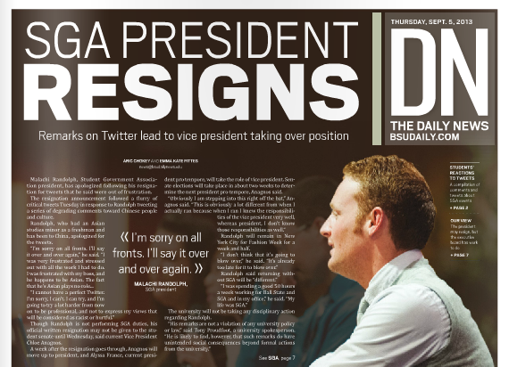

I got into journalism because my high school counselor wouldn't let me take the class I wanted to. She told me to take the newspaper class. I told her I thought journalism was stupid and fluffy.
Fast forward seven years and I'm now the digital producer for IPB News, a statewide reporting team for the NPR and PBS affiliates in Indiana.
I have the best job in the whole wide world. In addition to the nebulous job title of digital producer, I'm a radio and television reporter for the network, stepping in to assist when resources are limited.
And in September 2016, I become one of the first people to implement the Public Media Platform as a content sharing and aggregation tool on all of the websites in Indiana. I've worked with the project managers at NPR for Core Publisher and PMP to make this happen and help work out some of the quirks of that roll-out.
Other interests:
I am a baseball fanatic. I've been to the Cooperstown Hall of Fame four times and watched live games in 17 major league ballparks.
I like silly animals and animal GIFs. I'm a political junkie who never wants to run for office, but is confident I'd do a great job.
I'm a giant nerd who went to Star Trek conventions as a child and was raised on Batman comic books as bedtime stories.
Web.
Since 2014, I've worked in six different CMSs and gained valuable experience in web design with some development skills to back that up.
In addition to these examples, I have a working knowledge of Google Analytics and Chartbeat.
School referenda calculator
This is one of my favorite things I've ever made, and it required a ton of math. One of the education reporters I work with said, hey, how hard would it be to make a calculator? In six hours, I told her the answer: not the worst.
In Indiana, schools have to rely on referenda after a property tax cap was put in place in 2008. As part of our election reporting, with some help from a math-y source, we had a formula and I built a Javascript calculator.
I don't know if it's just me, but there's something kind of great about running around your apartment with a TASCAM in one hand and a vacuum cleaner in the other. In Indiana, traveling north toward Chicago, you run into this extraordinarily large wind farm, blanketing the entire view. But I had no idea they were noisy.
Thankfully, the energy and environment reporter I work with is pretty much game for what ever weird web thing I want to do. This is a result of that.
I interned at the Sacramento Bee from May-July 2014. As a pat of that internship, I had the pleasure of working with the data journalist on staff. The Bee used an online database program called Caspio. I was able to work with journalists as a reporter and designer and worked on the appearance and usability of databases.
The California State Fair hosts food competitions each year. I worked on the beer, wine and cheese databases.
Why have one database when you can have two? While the Sacramento Bee database was built with a program called Caspio, I wanted to learn how to build my own database.
Using Google's API, I build this sortable database of locations to get free food during the summer for low-income families. The program coordinator reached out the health reporter I was working with and helped distribute this database to libraries in the summer.
As a digital producer/web guru, I didn't imagine I would get to work as a reporter all that often.
I was wrong.
In Saginaw, I did behind-the-scenes reporting, pouring over documents and handing off information to reporters and anchors as information was released during the Flint water crisis. In Indianapolis, I've ended up being the general assignment reporter on a number of occasions, including protests, campaign announcements, and following around Sen. Joe Donnelly at every opportunity.
7 Arrested After More Than 500 Gather In Anti-Trump Rally
I ended up being the only person available to cover this protest, and so my first professional audio story was born.
Saturday marked the fourth day of anti-Trump protests nationwide, including one in Indianapolis.
After the protest, two IMPD officers were hit with rocks but uninjured. Seven people were arrested, but the protest was otherwise peaceful.
Bicyclists headed to Davis can get free train tickets back to Sacramento
I wanted to do a little bit of newswriting in addition to the digital work that I was doing in Sacramento. This story came out of a press release from a community newsletter. After tracing these businesses in Davis, I ended up with a great story about a guy who wanted to ride his bike.
John Swann used to commute regularly by bike from Davis to his job in Sacramento, but he'd often get a ride home.
Outstanding Senior Award controversy ignites desire for conversation on racial sensitivity at Ball State
I got to write this story because of the relationships I established with social rights groups on Ball State's campus. Covering campus protests became my unofficial beat. I received a tip that the people involved in this story would be willing to talk to me. There aren't any photos with the story because the images we could have used would only have promoted one side of the story or the other. I got to approach a very sensitive story with maturity I wouldn't have had a few years ago.
At 10:55 a.m. March 16, students received an email from the university announcing senior journalism and telecommunications major Chloe Anagnos as the winner of the John R. Emens Outstanding Senior Award.
In fewer than two hours, senior architecture major Huy Pham posted a screenshot of that email next to a 2013 Ball State Daily News article in which Anagnos defended owning a Confederate flag. Anagnos has since thrown out the flag, but her selection triggered a social media outcry that parallels a long national debate about race.
I thought video was terrifying. I have shakey hands and didn't want to try doing video. Shortly after I discovered tripods and monopods, my fear of video storytelling disappeared.
Video adds such an important element to stories. It can be emotionally powerful and educational. I've incorporated feature and news video in the examples below.
#BSA Supports Ferguson
I missed an extra gym class to do this video, but in light of the events in Ferguson hours before, the Black Student Association held a moment of silence on campus for the family of Michael Brown.
Students in our largest dining hall on campus joined in prayer and silence with the BSA. They clogged the Atrium and the normal roar of students talking and socializing fell to near silence.
2014 Bastille Day Waiter's Race
I got the opportunity to write a story for The Sacramento Bee. My internship was supposed to focus solely on digital content, but the feature editor was so impressed with my work on another project, she sent me out to cover Bastille Day in video and print.
The opening sequence was only possible through the kindness of one of the competitors. I had no background on the event, so I showed up and a waitress kindly wore a GoPro during her competition.
Bastille Day and the Waiter's Race is such a quirky event in the arts district in Sacramento, and the two people who won both had great uses for the money.
Sacramento chefs read mean Yelp! reviews
This was my third video project. The photo staff at The Sacramento Bee were generous enough to take a digital intern under their wing for improving the quality of my video work. This piece is the product of some of that generosity
The food beat reporter wanted to do a feature on the local chefs in Sacramento. So, he came to me and the features editor with the crazy idea of putting this video together. My editor thought it was quirky enough to be popular and gave her blessing.
I learned how to motion track in Final Cut 10 for the last chef's interview.
Sacramento Bee's 2014 Fireworks test and review
This video was the moment I realized that I had the best internship humanly possible. The Sacramento Bee does a fireworks test every year, and this year they wanted a little more dynamic video.
One of the shots has served as my cell phone lock screen since the end of July. It was fun to put together.
It's not exactly hard-hitting news video, but it served a purpose for the readers of The Bee.
Design.
My first "real" job in journalism was in April 2011, when I was hired as a senior in high school to work for Hoosier Basketball Magazine a small, but substantial annual publication covering baketball from high school to professional in Indiana. I worked as an advertising designer and front cover designer.
What I lacked in creative freedom, I made up for in practical experience. I fell in love with designing and received a handful of awards for my work in student media.
Print design
SGA PRESIDENT RESIGNS

After making racially insensitive tweets about Asian people, our student government president resigned at 5:15 p.m. Our news meeting started at 5 p.m. Within two minutes of resigning, we had a completely new art for package and someone writing a 1,000 word story.
This front page won several awards for the paper, including Indiana Collegiate Press Association, Society of Professional Journalists and Columbia Scholastic Press Association.
This was my favorite designed front page. I got to go to my one of my passions -- comic books -- and pull design inspiration. After perusing my comic book collection, I decided on this design, pulling inspiration from silver-age D.C. comics like Superman and Detective Comics.
This front page did not win any individual awards, but it was part of a collection that won me a Columbia Scholastic Press award.
Unified Media at Ball State University took on its biggest collaborative project in the form of the new university president's "State of the University" address. All five student media organizations contributed content to the feature page I designed as a preview to the speech.
After the story had been written, I realized there was a lot of potential for the story as a feature page. We repackaged and 'upcycled' the story and ran it less than a week later.